O'zbekiston Respublikasi |
|
| Andijon viloyati |
O'zbekiston Respublikasi
|
| Buxoro viloyati | |
| Fargʻona viloyati | |
| Jizzax viloyati | |
| Namangan viloyati | |
| Navoiy viloyati | |
| Qashqadaryo viloyati | |
| Qoraqalpogʻiston Respublikasi | |
| Samarqand viloyati | |
| Sirdaryo viloyati | |
| Surxondaryo viloyati | |
| Toshkent shahri | |
| Toshkent viloyati | |
| Xorazm viloyati | |
Andijon viloyati — Oʻzbekiston Respublikasi tarkibidagi viloyat [2]. Fargʻona vodiysining sharqiy qismida joylashgan. 1941-yil 6-martda tashkil etilgan. Maydoni 4,3 ming km². Aholisi 3 394 400 kishi (2024-yil 1-yanvar holatiga). Andijon viloyatida 2 ta viloyatga bo‘ysinuvchi shahar, 14 tuman, 11 ta tumanga bo‘ysinuvchi shaharlar, 79 ta shaharchalar, 455 ta Qishloq aholi punktlari bor (2024 yil holatiga). Markazi — Andijon shahri. Tarixi Viloyat 1941-yil 6-martda SSSR Oliy Soveti Prezidiumining farmoni bilan Fargʻona viloyatidan ajralib chiqib, Oʻzbekiston SSR tarkibida tashkil etilgan. Bu hududda avval, 1926—1930-yillarda O‘zbekiston SSRning Andijon okrugi tashkil etilgan. Dastlab viloyat tarkibiga Oyim, Oltinkoʻl tumani, Andijon, Baliqchi, Voroshilov, Jalaquduq, Izboskan, Lenin, Marhamat, [Paxtaobod, Stalin, Xoʻjaobod tumanlari hamda viloyatga qarashli Andijon va Leninsk shaharlari kirgan. 1943-yilda Xoldevonbek, Chinobod tumanlari, 1950-yilda Boʻz tumani, 1953-yilda Buloqboshi, Qoʻrgʻontepa, Moskva tumanlari tashkil etilgan. 1959-yilda Moskva viloyati tugatildi. 1960-yilda tugatilgan Namangan viloyati tarkibidan Namangan, Norin, Uychi, Uchqo‘rg‘on, Yangiqo‘rg‘on tumanlari hamda Namangan viloyatiga bo‘ysunuvchi shahar Andijon viloyati tarkibiga o‘tkazilgan. 1961-yilda Voroshilov tumani Ilyichevsk, Stalinsk esa Moskva deb o'zgartirilgan. Kosonsoy, Toʻraqoʻrgʻon va Chust tumanlari Fargʻona viloyatidan Andijon viloyatiga oʻtkazilgan. 1962 yil dekabr oyida Aim, Oltinkoʻl, Bo'z, Buloqboshi, Jalaquduq, Ilyichevsk, Kosonsoy, Lenin, Norin, Paxtaobod, Toʻraqoʻrgʻon, Uychi, Xaldivonbek va Chinobod tumanlari tugatilgan. 1964-yilda Boʻz va Zadaryo tumanlari tashkil etilgan.1965-yilda Marhamat tumani Lenin tumani deb nomlangan. 1967-yilda Uychi tumani tashkil topgan. Oʻsha yili Zadaryo, Namangan, Uychi, Uchqoʻrgʻon, Chust, Yaniqoʻrgʻon tumanlari hamda Namangan shahri qayta tiklangan Namangan viloyatiga oʻtkazilgan. 1970-yilda Marhamat, Paxtaobod tumanlari, 1973-yilda Jalaquduq va Komsomolobod, 1978-yilda Oltinko‘l tumanlari tashkil etilgan. 1972-yilda Sovetobod tumanga, 1994-yilda esa Shahrixonga viloyatga bo'ysunuvchi shahar maqomini olgan. 1992-yilda Buloqboshi tumani tashkil etilgan.
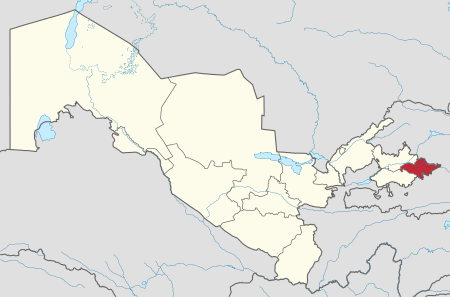 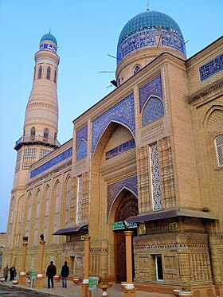 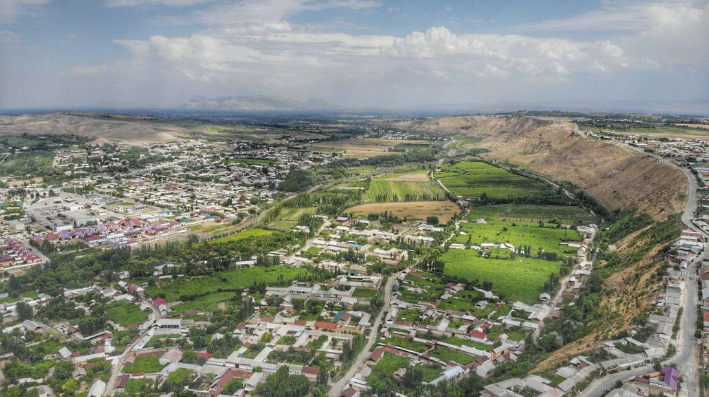Buxoro viloyati — Oʻzbekiston Respublikasining 12 viloyatlaridan biri. Oʻzbekiston viloyatlari ichida chegarasining kattaligi boʻyicha Navoiy viloyatidan keyin ikkinchi oʻrinda turadi. 1938-yil 15-yanvarda tashkil etilgan. Buxoro viloyati hududi asosan Qizilqum choʻlida joylashgan. Janubi-sharqini Zarafshon vodiysi egallagan. Shimoli-gʻarbda Xorazm viloyati va Qoraqalpogʻiston Respublikasi, shimol va sharqdan Navoiy viloyati, janubi-sharqda Qashqadaryo viloyati, janubi-gʻarbda Turkmaniston bilan chegaradosh. Maydoni 39,4 ming km2. Aholisi 2.000.255 kishi[1] (2022). Buxoro viloyati tarkibida 11 ta tuman (Buxoro, Vobkent, Jondor, Kogon, Olot, Peshkoʻ, Romitan, Shofirkon, Qorovulbozor, Qorakoʻl, Gʻijduvon), 11 ta shahar (Buxoro, Kogon, Galaosiyo, Vobkent, Gazli, Olot, Romitan, Shofirkon, Qorakoʻl, Qorovulbozor, Gʻijduvon), 3 ta shaharcha (Jondor, Zafarobod, Yangibozor), 121 ta qishloq bor. Buxoro viloyati aholisining etnik tarkibini asosan oʻzbeklar va ruslar, forslar (eroniylar), turkmanlar, tojiklar, ukrainlar, koreyslar, tatarlar va boshqalar tashkil etadi. Markazi — Buxoro shahri. Tarixi Buxoro viloyati 1938-yil 15-yanvarda tashkil topgan. Yil oxiriga kelib uning tarkibiga Surxondaryo okrugi, Beshkent, Buxoro, Vobkent, Gʻijduvon, Gʻuzor, Dehqonobod, Kogon, Qamashi, Qorakoʻl, Qarshi, Koson, Konimex, Karmana, Qiziltepa, Kitob, Romitan, Sverdlov, Chiroqchi tumani, Shofirkon, Shahrisabz, Yakkabogʻ tumanlari va viloyatga qarashli Buxoro, Gʻijduvon, Kogon, Qarshi va Shahrisabz shaharlari qo'shilgan. 1941-yil 6-martda Surxondaryo okrugi Buxoro viloyati tarkibidan chiqarilib, Surxondaryo viloyatiga aylantirilgan. 1943-yil 20-yanvarda Beshkent, G‘uzor, Dehqonobod, Qamashi, Qarshi, Koson, Kitob, Chiroqchin, Shahrisabz, Yakkabog‘ viloyatlari hamda Qarshi va Shahrisabz shaharlari Buxorodan yangi Qashqadaryo viloyati tarkibiga o‘tkazilgan. 1943-yil 13-fevralda Olot tumani tashkil etilgan, 1943-yil 2-avgustda Tomdi tumani Qoraqalpogʻiston ASSR tarkibidan Buxoro viloyatiga oʻtkazilgan. 1950-yil 15-aprelda Peshku, 1952-yil 16-aprelda Galaosiyo tumanlari tuzilgan. 1958-yil 22-sentyabrda Karmana tumani Navoiy deb nomlangan. 1959-yilda Galaosiyo, Peshku (1959-yil 19-mart) va Olot (1959-yil 9-dekabr) tumanlari, 1962-yil dekabrda Kogon, Konimex, Qiziltepa, Sverdlovsk va Shofirkon tumanlari tugatilgan. 1964-yil 31-dekabr Kogon, 1965-yil Konimex, 1967-yil 9-yanvar Sverdlov, 1968-yil Shofirkon, 1970-yil Qiziltepa, 1973-yil Olot, 1972-yil Peshku, 1980-yil 12-mart Navbahor, 1982-yilda - Gazli va Uchquduq tumanlari tashkil etilgan. 1972-yilda Zarafshon, 1978-yilda esa Uchquduq viloyatga boʻysunuvchi shahar maqomini olgan. 1982-yil 20-aprelda Navoiy viloyatiga Buxoro viloyati tarkibidan Konimex, Qiziltepa, Navbahor, Navoiy, Tomdi va Uchquduq tumanlari hamda Zarafshon va Uchquduq shaharlari kiritilgan. 1984-yilda Gazli tumani tugatilgan.
 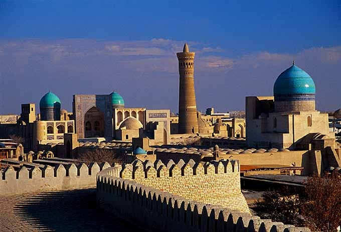
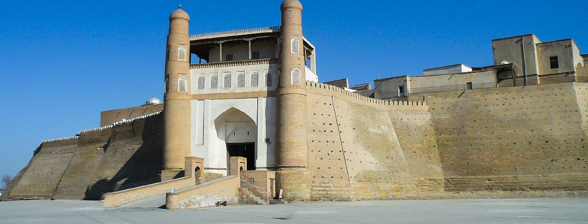
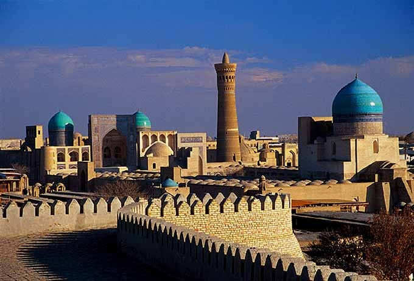
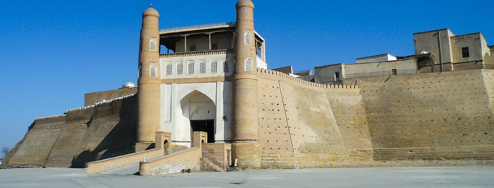
Fargʻona viloyati — Oʻzbekiston Respublikasi tarkibidagi viloyat. 1938-yil 15-yanvarda tashkil etilgan. Respublikaning sharqida, Fargʻona vodiysining janubida joylashgan. Shimoldan Namangan, Andijon viloyatlari, janub va sharqdan Qirgʻiziston, gʻarbdan Tojikiston Respublikalari bilan chegaradosh. Maydoni 6,8 ming km2. Aholisi 2023-yil 1-aprel 3 994 800 kishi. Tarkibida 15 tuman, 4 shahar (Margʻilon, Fargʻona, Quvasoy, Qoʻqon), 5 tumanga boʻysunuvchi shahar (Beshariq,Rishton,Yaypan,Quva,Hamza,25 dan ortiq shaharcha, 164 qishloq fuqarolari yigʻini bor (2019). Markazi — Fargʻona shahri. Tarixi Xudoyorxon oʻrdasi Fargʻona darvozasi Fargʻona xalqaro aeroporti Fargʻona viloyati Oʻzbekistonning qadimgi madaniyat oʻchoqlaridan biri. Viloyat hududida topilgan tosh davri manzilgohlari va qoyatoshlariga solingan suratlar vodiyda odamlar eng qadimgi davrlardan beri yashab kelganliklaridan darak beradi. Fargʻona viloyatining tosh davri yodgorliklarini 1954-yil A. P. Okladnikov rahbarligidagi arxeologiya otryadi oʻrgangan. Vodiyning sharqiy qismidagi Qayroqqum, Xoʻjagʻor va Uchqoʻrgʻon makonlaridan mustye davriga oid tosh qurollar topildi. Vodiyning gʻarbiy qismidagi qadimgi tosh davri madaniyatiga oid manzilgohlar mustye davridagi Qalʼacha, Jarqoʻton va Qapchigʻay tosh qurollar ishlash ustaxonalari topilib oʻrganildi. 1958-yil birinchi marta Markaziy Fargʻonadan mezolit davriga oid mikrolit tosh qurollari topildi. Shuningdek, Markaziy Fargʻonadagi Uzunkoʻl va Tayloqkoʻl atroflaridan mezolit va neolit davrlariga oid 24 ta manzilgoh borligi aniqlandi (1965). Soʻx vohasidagi 28 gʻor va ungurlar (Selungur, Eshma, Obishir, Sur, Bel, Zim, Ovikambar, Bogʻishim va boshqalar) roʻyxatga olindi. Obishir gʻorlaridagi madaniy qatlam yaxshi saqlangan. Gʻorlarni qazish jarayonida mezolit davriga oid tosh qurollar, xayvon suyaklari topilgan. Bular oʻsha davr turmushini oʻrganish imkonini beradi. 1967 va 1969—70 yillarda Sankt-Peterburgdagi Ermitaj muzeyi xodimlari mezolit va neolit davrlariga oid 35 ta manzilgoh topdilar. Fargʻona viloyatining arxeologik yodgorliklarini oʻrganishda Katta Fargʻona kanalining qazilishi muhim ahamiyatga ega boʻldi. Kanalni qazish jarayonida jez davri, quldorlik va zamindorlik jamiyatlariga oid yodgorliklar topildi va tekshirildi. Quva va Toshloq tumanlari oʻrtasidagi Akbarobod qishlogʻida jez davriga oid manzilgoh, Margʻilonsoyning chap sohilida Oqtom qabristoni boʻlganligi aniqlandi. Fargʻona viloyatining Quva tumanida quldorlik davriga oid Taxyontepa, Fargʻona shahrida Simtepa (Chimtepa) kabi yodgorliklar topib oʻrganilgan. Ayniqsa, Quva shahridagi miloddan avvalgi 5-asr va oʻrta asr boshlariga oid topilmalar yaxshi tekshirilgan. 10-11-asrlarga doir tarixiy manbalarda bu shahar obodligi va kattaligi jihatidan vodiyda Axsikatdan soʻng eng yirik shahar deb qayd qilingan. Arxeologik materiallar Margʻilon shahri 10-asrda katta qishloq boʻlib, 11-12-asrlarda shaharga aylanganligini, Rishton esa 10-asrda katta shahar boʻlsa ham, 11-12 asrlarga kelib qishloq qiyofasiga kirib qolganligini isbotlaydi. Oʻtroq dehqonchilik, chorvachilik bilan shugʻullangan Chust madaniyatiga oid manzilgohlardan topilgan yodgorliklar Fargʻona vodiysini oʻrganishda muhimdir. U yerda ishlab chiqarish kuchlari va xoʻjalikning taraqqiyoti jez davrining oxirida dehqonchilik qabilalarining ijtimoiy tuzumida oʻzgarish yuz berishiga, natijada ibtidoiy tartiblar tugab, jamiyatdagi tabaqalanishga olib kelgan. Roʻzgʻor anjomlarida xususiy mulkchilik kurtaklari koʻzga tashlanadi. Arxeologik tekshirishlar natijasi Fargʻona viloyatida qadimdan odamlar yashab, ovchilik, dehqonchilik, chorvachilik bilan shugʻullanganligidan, kishilik jamiyatining keyingi bosqichlarida esa madaniyat rivojlana boshlaganligidan dalolat beradi.
 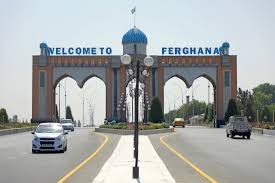
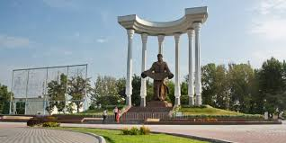
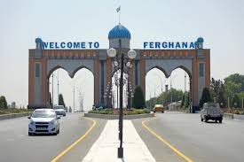
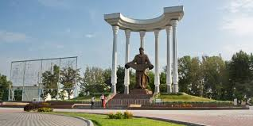
Jizzax viloyati — Oʻzbekiston Respublikasi tarkibidagi viloyat. Respublikaning markaziy qismida joylashgan. 1973-yil 28-dekabrda viloyat sifatida tashkil etilgan. Shimoliy-sharqda Qozogʻiston Respublikasi va Sirdaryo viloyati, janubi-gʻarbda Samarqand, Navoiy viloyatlari, janubi-sharqda Tojikiston Respublikasi bilan chegaradosh. Maydon 21,2 ming km2. Aholisi 1 mln 483,1 ming kishi (2022.04). Jizzax viloyatida 12 ta tuman bor: Arnasoy, Baxmal, Doʻstlik, Sharof Rashidov, Zarbdor, Zafarobod, Zomin, Mirzachoʻl, Paxtakor, Yangiobod, Forish, Gʻallaorol. 20 ta shahar va shaharchalar (Gagarin, Dashtobod, Doʻstlik, Jizzax, Marjonbuloq, Paxtakor, Gʻallaorol, Zarbdor, Zomin, Boʻston, Zafarobod, Oʻsmat, Uchquloch, Bogʻdon, Pishagʻar, Qoʻytosh, Sharq yulduzi, Arnasoy), 400 qishloq fuqarolari yigʻini bor (2022). Markazi — Jizzax shahri. Tabiati Relyefi togʻlik, qir va tekisliklardan iborat. Janubiy qismini Turkiston tizmasining tarmoqlari (Morguzar tizmasi), gʻarbini Nurota tizmasining sharqiy qismi egallagan. Shimoliy, shimoli-gʻarbi va sharqiy qismi (Mirzachoʻl va Qizilqum choʻlining janubi-sharqi) tekislikdan iborat. Iqlimi keskin kontinental. Yanvarning oʻrtacha tempaturasi —4° gacha, iyulniki 28°. Togʻ oldilarida iqlim choʻl va dashtlarga nisbatan yumshoq. Yillik yogʻin viloyat janubida 400—500 mm, shimolida 250—300 mm. Vegetatsiya davri 210—240 kun. Yillik quyoshli kunlar 2800—3000 soat. Eng yirik daryolari — Sangzor, Zominsuv. Togʻlardan oqib tushuvchi soy koʻp. Ekinlarni sugʻorish uchun Tuyatortar kanali, 1- va 2-Janubiy Mirzachoʻl kanallari, Jizzax, Zomin, Qorovultepa suv omborlari qurilgan. 2001-yilda Arnasoy suv ombori qurila boshlandi. Arnasoy, Aydarkoʻl va Tuzkon koʻllaridan baliqchilikda foydalaniladi. Togʻ yon bagʻirlarida yovvoyi jiyda, archa, bodom, yongʻoq, naʼmatak, zira, rovoch, zirk kabilar oʻsadi. Yovvoyi hayvonlardan oq tirnoqli ayiq, chiyaboʻri, tulki, quyon, qobon, boʻrsiq, jayra uchraydi; burgut, lochin, qora turna, bulduruq, tuvaloq, tustovuq, qirgʻovul, yovvoyi oʻrdak, kaklik kabi qushlarning 150 dan ortiq turi mavjud. Viloyatda Zomin milliy bogʻi, Zomin va Nurota davlat qo'riqxonalari tashkil qilingan.
 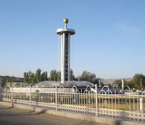
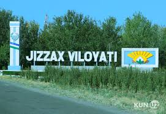
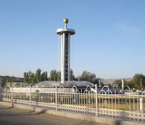
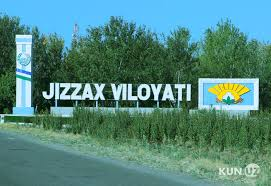
Namangan viloyati — Oʻzbekiston Respublikasi tarkibidagi viloyat. 1941-yil 11-martda tashkil etilgan (1960-yil 25-yanvarda Andijon va Fargʻona viloyatlari tarkibiga qoʻshib yuborilgan. 1967-yil 18-dekabrda qayta tashkil etildi). Namangan viloyati respublikaning sharqida, Fargʻona vodiysining shimoli-gʻarbiy qismida, Tyanshan togʻ tizmasi tarmoklari — Qurama va Chatqol togʻlarining yon bagʻrida joylashgan. Shimoliy va shimoli-sharqdan Qirgʻiziston Respublikasining Jalolobod viloyati, janubi-sharqdan Andijon, janubidan Fargʻona, shimoliy va shimoli-gʻarbdan Toshkent viloyati va Tojikistonning Sugʻd viloyati bilan chegaradosh. Maydoni 7,44 ming km². Aholisi 2931,5 ming kishi (2021). Namangan viloyatida 11 qishloq tumani (Kosonsoy, Mingbuloq, Namangan, Norin, Pop, Toʻraqoʻrgʻon, Uychi, Uchqoʻrgʻon, Chortoq, Chust, Yangiqoʻrgʻon), 8 shahar (Namangan, Kosonsoy, Pop, Toʻraqoʻrgʻon, Uchqoʻrgʻon, Chortoq, Chust, Haqqulobod), 11 shaharcha (Sang, Jomashoʻy, Toshbuloq, Navbahor, Oltinkon, Uygʻursoy, Chorkesar, Xalqobod, Uychi, Oʻnhayot, Yangiqoʻrgʻon, Oqtosh, Chodak), 99 qishloq fuqarolari yigʻini bor. Markazi — Namangan shahri. Namangan viloyatidagi adir Tarixi Namangan viloyati 1941-yil 6-martda SSSR Oliy Soveti Prezidiumining farmoni bilan (bundan oldin uning hududi Fargʻona viloyati tarkibiga kirgan) Oʻzbekiston SSR tarkibida tashkil etilgan. Viloyat tarkibiga Kosonsoy, Namangan, Norin, Pop, Toʻraqo‘rg‘on, Uychi, Uchqo‘rg‘on, Chust va Yangiqo‘rg‘on tumanlari hamda Namangan va Chust viloyatga bo‘ysunuvchi shaharlar kirgan. 1950-yilda Chortoq, 1952 yilda Zadaryo tumanlari tashkil topdi. Bu ikkala tuman ham 1959-yilda tugatilgan. 1960-yil 25-yanvarda Namangan viloyati tugatilib, uning hududi Andijon va Fargʻona viloyatlari (Namangan shahri — Andijon shahriga bevosita boʻysunuvchi) tarkibiga kirgan. Viloyat 1967-yil 18-dekabrda tiklangan. Qayta tiklash davrida viloyat tarkibiga Zadaryo, Namangan, Pop, Uychi, Uchqo‘rg‘on, Chust va Yangiqo‘rg‘on tumanlari hamda Namangan shahri qoʻshilgan. 1970-yilda Toʻraqoʻrgʻon, 1973-yilda Kosonsoy va Norin, 1980-yilda Chortoq tumanlari tashkil etilgan. 1969-yilda Chust, 1974-yilda Uchqo‘rg‘on, 1979-yilda Kosonsoy, 1983-yilda Chortoq, 1988-yilda Haqqulobod viloyatga bo‘ysunuvchi shahar maqomini olgan. Tabiati Viloyat hududining asosiy qismi Sirdaryoning oʻng sohilida, keng Fargʻona vodiysida joylashgan. Yer yuzasi, asosan, tekislik boʻlib, shimoliyda qator tepaliklar va Chatqol hamda Qurama togʻlari bilan oʻralgan. Balandligi 350-800 m. Togʻ va adirlar, tor vodiylar, vohalar toʻrtlamchi geologik davrning katta-kichik daryolari va irmoqlarning faoliyatidan hosil boʻlgan. Viloyat hududi geologik faol zonada joylashgan va 8 ballgacha-zilzilalar boʻlib turadi. Keng maydonni egallab yotgan va dehqonchilik obyekti boʻlgan Qoraqalpoq choʻli neogen davrida paydo boʻlgan. Foydali qazilmalardan Chodak oltin koni, togʻ kvarsi, sur-ma, mis, neft, gips, ohaktosh va boshqa qurilish materiallari, shifobaxsh mineral suvlar (Chortoqda) topilgan. Chust-Pop yer osti suvining issiqligi 50° (1300 m dan chiqadi). Suv tarkibida yod va brom bor. Chodaksoydan (450 m chuqurlikdan) 23° issiqlikdagi vodorod-sulfidli suv chiqadi. Chortoq, Shahand, Kosonsoy, Uchqoʻrgʻon suvlari oʻzining minerallanish darajasi va harakteri boʻyicha mashhur Matsesta, Chakrak, Tal suvlaridan qolishmaydi. Yer osti suvlari togʻ, adir, togʻ oldi botiqlarida va yoyilmalarda yirik toshli, shagʻalli va qumli qatlamlarda joylashgan. Sirdaryoga yaqin zonalarda yer osti (sizot) suvlari mavjud. Iqlimi keskin kontinental. Yozi uzok, issiq, qishi qisqa, nisbatan sovuq. Yillik oʻrtacha temperatura +13°. Yanvarda temperatura −25° gacha pasayadi, iyunda +35-+45° ga yetadi. Vegetatsiya davri 229 kun. Viloyatning turli qismlarida yogʻin miqdori turlicha. Namanganda oʻrtacha yillik yogʻin miqdori 230 mm, gʻarbida 90-190 mm, sharkiy tumanlarida 300-400 mm, togʻ etaklarida 600 mm. Yogʻinning eng koʻp kismi bahor va kuzda yogʻadi. Daryolari yogʻindan, togʻlardagi qor va muzliklardan suv oladi. Namangan viloyatida 16 dare va soy, koʻplab mavsumiy soylar mavjud. Eng katta daryosi — Sirdaryo. U Norin va Qoradaryoning qoʻshilishidan hosil boʻladi. Norin va Sirdaryoga Chatqol togʻlaridan oqib tushadigan Pochchaotasoy, Chortoksoy, Chustsoy, Olmossoy, Chodaksoy, Gʻovasoy, Kosonsoy, Namangansoy kabi sersuv togʻ daryolari kuyiladi. Kosonsoy, Chortoq, Eskiyer suv omborlari, Oxunboboyev, Shimoliy Fargʻona, Katta Namangan kanallari qurilgan. Bahor va yoz boshlarida sodir boʻladigan sel hodi-salaridan saqlanish uchun sel omborlari barpo qilingan. Tuproklari prolyuvial, oʻtloq, oʻtloqi-botqoq, och tusli boʻz, ayrim joylarda shoʻrxok, och tusli qoʻngʻir, jigarrang. Adirlar qumtosh, mergel, lyoss va chagʻirtoshlar bilan qoplangan. Bahorda efemer oʻsimliklar oʻsadi, chorva mollari boqiladi. Tekislik qismlarida boʻz, koʻngʻir tuproqlar, qadimdan dehqonchilik qilib kelingnidan tabiiy holati oʻzgargan va unumdorligi oshirilgan. Kosonsoyda tipik va qoramtir boʻz tuproq, Namangan, Uchqoʻrgʻon, Chust tumanlarida och boʻz tuproq tarqalgan. Tekislik qismining ekin ekilmaydigan yerlarida shoʻra, shuvoq, lola, otquloq, Sirdaryo boʻylarida betaga, astragal va boshqa oʻsadi. Togʻlarda archazorlar, yovvoyi olcha, olma va yongʻoqzorlar uchraydi. Togʻlarning baland qismi subalp oʻtloklari — yozgi yaylovlardan iborat. Namangan viloyatida deyarli oʻrmon yoʻq. Namangan mevali oʻrmon koʻchatzori va Namangan oʻrmon koʻchatzori mavjud. Choʻl va adirlar oʻzlashtirilib yuborilgandan boʻri, tulki, qobon, yumronqoziq kam uchraydi. Togʻlarda togʻ takasi, sugʻur bor. Adirlarda kalamush, dala sichqoni, echkemar, tipratikan, choʻl toshbaqasi, turli xil ilon va kaltakesak koʻp. Qushlardan burgut, kaklik va boshqa bor. Qorabovur, yovvoyi oʻrdak va boshqa ovlanadi. Dare, soy va boshqa suv havzalarida har xil baliq yashaydi, ondatra keng tarqalgan. Pochchaotasoy, Gʻovasoyda qunduz ham uchraydi. Namangan viloyati xududining intensiv oʻzlashtirilishi oqibatida sudralib yuruvchilar, qushlar, sut emizuvchilar, baliklarning koʻp turlari kama-yib bormoqda. Aholining asosiy qismini oʻzbeklar (87,8%) tashkil etadi, shuningdek, tojik (9,0%), kirgiz (1,0%), rus (0,8%), tatar, ukrain, ozarbayjon, yahudiy, belarus, arman, qozoq va boshqa millat vakillari ham (jami 89 millat) yashaydi. Aholi zichligi oʻrtacha 1 km² ga 266 kishi. Qishloq aholisi 1238,9 ming kishi, shaharliklar 743,8 ming kishi (2002).
 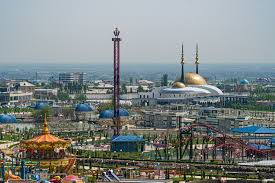
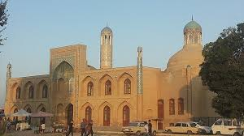
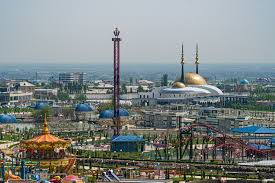
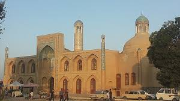
 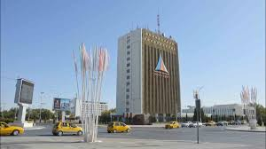
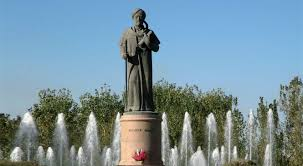
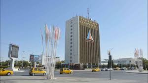
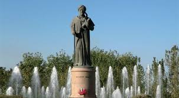
Qashqadaryo viloyati — Oʻzbekiston Respublikasi tarkibidagi viloyat. 1924-yil 1-noyabrda tashkil etilgan. Respublikaning janubi-gʻarbida, Qashqadaryo havzasida, Pomir-Oloy togʻ tizmasining gʻarbiy chekkasida, Amudaryo va Zarafshon daryolari, Hisor va Zarafshon tizma togʻlari orasida. Shimoli-gʻarbdan Buxoro va janubi-sharqdan Surxondaryo viloyatlari, janubi-gʻarb va gʻarbdan Turkmaniston Respublikasi, sharqdan Tojikiston Respublikasi hamda Samarqand viloyati bilan chegaradosh. Maydoni 28,6 ming km². Aholisi 3,408,300 kishi (3-oʻrin) (2022). Viloyat hokimi Murotjon Azimov (2021-yil 18-noyabrdan) Tarkibida 14 ta tumani (Dehqonobod, Kasbi, Kitob, Koson, Koʻkdala tumani), Mirishkor, Muborak, Nishon, Qamashi, Qarshi, Yakkabogʻ, Gʻuzor, Shahrisabz, Chiroqchi, 12 ta shahar (Beshkent, Kitob, Koson, Muborak, Tallimarjon, Chiroqchi, Shahrisabz, Yakkabogʻ, Yangi Nishon, Qamashi, Qarshi, Gʻuzor), 4 ta shaharcha (Yangi Mirishkor,Dehqonobod, Miroqi, Eski Yakkabogʻ, Pomuq), 147 ta qishloq fuqarolari yigʻini, 1064 ta qishloq bor (2005). Qashqadaryo viloyati tumanlari haqida alohida maqolalarga qarang: masalan, Dehqonobod tumani, Kasbi tumani va boshqalar. Tabiati Qashqadaryoning kechki koʻrinishi Viloyat hududi, asosan, Qashqadaryo botigʻini oʻz ichiga olgan; shimol, sharq va janubi-sharqdan Zarafshon hamda Hisor tizma togʻlari bilan oʻralgan. Togʻlar bilan tekisliklar orasini adirlar egallagan. Tekislikning katta qismi gʻarbda Sandiqli va Qizilqum choʻllari bilan tutashgan Qarshi choʻlidan iborat. Iqlimi kontinental. Qishi nisbatan yumshoq. Yozi uzoq (155-160 kun), issiq, quruq. Yanvarning oʻrtacha temperaturasi 0,2° dan 1,9° gacha, iyulniki 28°-29,5°. Eng yuqori temperatura 45°. Eng past temperatura −20°.-yiliga tekisliklarda 290-300 mm, adirlarda 520-550 mm, togʻlarda 550-650 mm yogʻin tushadi. Yogʻin, asosan, bahor va qishda yogʻadi, yozda garmsel esadi. Togʻlarda turgʻun qor qoplami hosil boʻladi (2-6 oy). Vegetatsiya davri tekisliklarda 290-300 kungacha. Asosiy daryosi — Qashqadaryo. Uning irmoqlari — Jinnidaryo, Oqsuv, Yakkabogʻdaryo, Tanxozdaryo, Gʻuzordaryo (Katta va Kichik Oʻradaryo bilan birga). Daryolar qor, yomgʻir va muzliklar suvidan toʻyinadi. Daryo suvidan, asosan, sugʻorishda foydalaniladi. Chimqoʻrgʻon, Qamashi, Pachkamar suv omborlari; Fayziobod, 8-Mart, Eskibogʻ, Eski Anhor, Koson, Paxtaobod, Qarshi va boshqalar kanallar bor. Qarshi choʻlini oʻzlashtirishda 6 nasos stansiyasi, ochiq va yopiq kollektor drenaj tarmoqlari qurilgan. Sugʻoriladigan yerlarning tuprogʻi, asosan, tipik va och boʻz tuproqlar. Kitob — Shahrisabz soyligida koʻproq qumoq tuproqlar mavjud. Togʻlarda balandlik mintaqalari boʻylab tipik boʻz tuproqlar tarqalgan. Tabiiy florasi 1200 ga yaqin yuksak oʻsimlik turidan iborat. Viloyatda 76,6 ming ga oʻrmon mavjud. Oʻrmonlarning asosiy qismini archa va saksovulzorlar tashkil etadi. Togʻ yon bagʻirlari har xil oʻt oʻsimliklari bilan qoplangan, shuningdek, butazorlar ham bor. Togʻ oʻrmonlari archa, bodom, pista, jiydazorlardan iborat. Togʻlarda naʼmatak, zirk, chakanda, anzur piyozi, qora zira va boshqalar oʻsadi.
 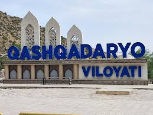
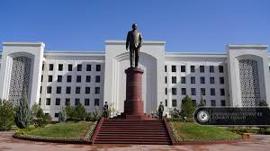
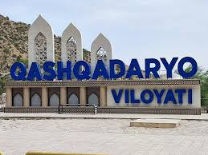
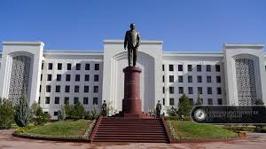
Qoraqalpogʻiston — Maydoni 166,6 ming km². Aholisi 2 million (2024). Respublika poytaxti — Nukus shahri. Tarkibida 16 tuman, 12 shahar, 14 shaharcha va 124 fuqarolar yigʻini bor.[1] Davlat tuzumi Qoraqalpogʻiston — parlament boshqaruv shakliga ega boʻlgan O'zbekiston respublikasi tarkibidagi suveren demokratik respublika. Qonun chiqaruvchi oliy davlat vakolatli organi — koʻp partiyaviylik asosida 5 yil muddatga saylangan deputatlardan iborat Qoraqalpogʻiston hududi Joʻqorgʻi Kengeshi (QR JK). Qoraqalpogʻiston hududi Joʻqorgʻi Kengeshi raisi respublika rahbari hisoblanib, u Joʻqorgʻi Kengesh deputatlari orasidan 5 yil muddatga saylanadi (faqat ketma-ket 2 muddatdan oshmaydi). Davlat hokimiyatining oliy ijro etuvchi-boshqaruvchi organi Qoraqalpogʻiston Respublikasi Vazirlar Kengashi, yaʼni Qoraqalpogʻiston Respublikasi hukumati hisoblanadi. Qoraqalpogʻistonda Oʻzbekiston Respublikasi Konstitutsiyasi bilan bir vaqtda Qoraqalpogʻiston Oliy kengashining 1993-yil 9-apreldagi 12-chaqiriq 12-sessiyasida qabul qilingan Qoraqalpogʻiston Hududi Konstitutsiyasiga amal qilinadi. Qoraqalpogʻiston oʻz davlat ramzlari: gerb, madhiya va bayrogʻiga ega.[1] Tabiati Qoraqalpogʻiston Qizilqum choʻlining shimoli-gʻarbiy, Ustyurt platosining janubi-sharqiy qismi va Amudaryo deltasida joylashgan. Orol dengizining janubiy qismi Qoraqalpogʻiston hududida. Qizilqumning shimoli-gʻarbiy qismi Orol dengizi tomon pasayib boruvchi keng yassi tekislik boʻlib, qator tepa va qumli barxanlar (balandligi 75 m dan 100 m gacha) uchraydi. Alohida togʻ massivlari (eng yirigi — Sulton Uvays togʻi, choʻqqilari 473 m va 485 m) bor. Sugʻoriladigan yerlar va sugʻorish kanallari, asosan, deltaning oʻng sohilida. Gʻarbida bir nechta botiqli (Borsakelmas, Asakaovdon botiqlarining balandligi 29–101 m) Ustyurt platosi joylashgan. Plato Orol dengizi va Amudaryo deltasiga tik yon bagʻirli jarlik — chinklar hosil qilib tushgan. Ustyurtdan janubi-sharqda Sariqamish soyligining shimoliy chekkasi joylashgan. Foydali qazilmalardan osh tuzi va glauber tuzi, mineral xom ashyo hamda qurilish materiallari va boshqalar bor. Iqlimi keskin kontinental, yozi quruq va qishi nisbatan sovuq, qor kam yogʻadi. Yanvar oyining oʻrtacha temperaturasi janubda -4,9°, shimolida -7,6°, iyulda janubida 28,2°, shimolida 26°. Yillik yogʻin 110 mm, asosan, qish va bahor oylarida yogʻadi. Vegetatsiya davri 194–214 kun. Eng yirik daryosin— Amudaryo (quyi oqimi). Amudaryo havzasi qadimdan sugʻoriladigan hudud sifatida maʼlum. Daryo suvidan sugʻorishda foydalaniladi. Nukus shahrida joylashgan suv xoʻjaligi boshqarmasi Taxiatosh gidrouzeli, Qipchoq gidropostidan Orol dengizigacha boʻlgan (283 km) hududdagi daryoning barcha suv chiqarish inshootlarini nazorat qiladi. Oʻrta va yuqori oqimlarda daryo suvi sugʻorishga koʻp sarflanishi natijasida hozirgi Amudaryo Orol dengiziga bevosita quyilmaydi. Qoraqalpogʻistonning eng yirik koʻli — Orol dengizi, shuningdek, Xoʻjakoʻl — Qora-jar koʻllar sistemasi bilan bogʻlangan Sudochye koʻl sistemasi hamda Orol dengizining qurib qolgan qismida tashkil etilgan sunʼiy suv havzalari ham mavjud. Soʻnggi 40 yil ichida Amudaryo va Sirdaryo havzalarida sugʻoriladigan yerlarning kengayishi natijasida Orol dengizi suv sathi 2005-yil boshida 23 m pasaydi. Qoraqalpogʻistonning barcha suv havzalaridan baliq ovlanadi, ularda baliq xoʻjaliklari tashkil etilgan.[1]
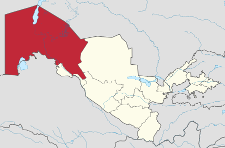Samarqand viloyati – Oʻzbekiston Respublikasidagi maʼmuriy birlik. Maʼmuriy markazi – Samarqand shahri. Mamlakatning muhim iqtisodiy va madaniy mintaqasi. Tarixi Qadimgi davrda Samarqanddan topilgan odam boshi suyaklari parchalarini arxeologlar Yuqori paleolit davriga kiritishadi[1][2][3]. Rossiya imperiyasi davrida Rossiya imperiyasi davrida Samarqand viloyatidan boʻlgan oʻzbek hikoyanavislari: Fozil Yoʻldosh oʻgʻli (1872-1955), Muhammad Jonmurod oʻgʻli Poʻlkan (1874-1941), Islom Nazar oʻgʻli (1874-1953), Abdulla Shoir Nurali oʻgʻli (1870-1975), Qurbon Ismoil oʻgʻli (1869-1940) boʻlgan. Hikoyachilardan eng mashhuri Ergash Jumanbulbul oʻgʻli edi[4]. Statistik maʼlumotlarga koʻra, 1887-1888-yillarda Samarqand tumanida 254195 kishidan 186532 kishi (yaʼni aholining 73 foizi) oʻzbeklar, qolgan aholisini tojiklar, ruslar, arablar, eronliklar va boshqalar tashkil etgan[5]. Sovet Ittifoqi davrida SSSR Oliy Soveti Prezidiumining 1938-yil 15-yanvardagi farmoni bilan Samarqand viloyati Oʻzbekiston SSR tarkibida tashkil etilgan. Viloyat tarkibiga Oqdaryo, Bulungʻur, Gʻallaorol, Jomboy, Jizzax, Zomin, Qoradaryo, Kattaqoʻrgʻon, Mitan, Narpay, Nurota, Payariq, Pastdargʻom, Paxtakor, Samarqand, Urgut tumanlari, Samarqand, Jizzax va Kattaqoʻrgʻon shaharlari kirgan. 1939-yilda Komsomol, 1943-yilda Ishtixon, Qoraqishloq va Qoʻshrabot, 1950-yilda Charxa, 1953-yilda Narimanov tumanlari tashkil etildi. 1957-yilda Qoraqishloq, Qushrobod va Charxa tumanlari, 1959-yilda Qoradaryo, Komsomol, Mitan va Narimanov tumanlari, 1962-yilda Oqdaryo, Gʻallaorol, Jomboy, Zomin, Paxtakor, Urgut, Forish va Xatirchi tumanlari tugatildi. 1963-yil 16-fevralda Samarqand viloyati hududining bir qismi (qishloq xoʻjaligi yangi rivojlanayotgan hududlarda – Jizzax viloyati va Jizzax shahri) yangi tashkil etilgan Sirdaryo viloyatiga oʻtkazildi. 1964-yilda Gʻallaorol, Urgut va Xatirchi, 1968-yilda Oqdaryo, 1970-yilda Jomboy, 1971-yilda Baxmal, 1973-yilda Paxtachi tumanlari tashkil etildi. 1973-yil 29-dekabrda Samarqand viloyati hududining bir qismi (Baxmal va Gʻallaorol tumanlari) yangi tashkil etilgan Jizzax viloyatiga oʻtkazildi[6]. 1975-yilda Sovetobod tumani, 1978-yilda Qoʻshrabot tumani, 1980-yilda Bolshevik tumani (1988-yilda tugatilgan) tashkil etildi. Oqtosh (1975) va Urgut (1981) viloyatga boʻysunuvchi shahar maqomini oldi. 1982-yil 20-aprelda Samarqand viloyati hududining bir qismi (Nurota va Xatirchi tumanlari) yangi tashkil etilgan Navoiy viloyatiga oʻtkazildi. 1988-yil sentabrda Navoiy viloyati Samarqand viloyati tarkibiga kirdi. 1989-yil may oyida Navoiy viloyatining 7 ta tumani va Navoiy shahri Buxoro viloyatiga oʻtkazildi. Mustaqillikdan keyingi davrda 1992-yilda Navoiy viloyati qayta tiklandi va uning sobiq tumanlari yana uning tasarrufiga oʻtkazildi[7]. 2001-yilda viloyatning Goʻzalkent tumani Pastdargʻom tumaniga, Chelak tumani esa Payariq tumaniga kiritildi[8]. Geografiyasi Samarqand viloyati Oʻzbekistonning markaziy qismida, Zarafshon daryosi havzasida joylashgan. Uzoq shimolda Navoiy viloyatining Nurota tumani, shimoli-gʻarbda Navoiy viloyatining Xatirchi va Karmana tumanlari, gʻarbda Navoiy viloyatining Qiziltepa tumanlari, janubda – Navoiy viloyatining Qiziltepa tumanlari bilan chegaradosh. Qashqadaryo viloyatining Muborak, Koson, Chiroqchi va Kitob tumanlari, sharqda Tojikiston Respublikasi Sugʻd viloyatining Panjikent tumani, shimoli-sharqda Jizzax viloyatining Baxmal, Gʻallaorol va Forish tumanlari bilan chegaradosh. Viloyatning markaziy qismini sharqdan gʻarbga Zarafshon va Turkiston tizmalari oraligʻida choʻzilgan voha va adirlar egallaydi. Viloyatdagi sugʻoriladigan yerlarning koʻp qismi shu qismda joylashgan. Vaqt mintaqasi Samarqand viloyati hududi ham butun Oʻzbekiston hududi kabi UTC+5 xalqaro standarti boʻyicha belgilangan vaqt mintaqasida joylashgan. Oʻzbekiston yozgi vaqtdan foydalanmaydi. Tabiati Iqlimi Samarqand viloyatining iqlimini 2 zonaga boʻlish mumkin. Shimoliy va uzoq gʻarbda kontinental iqlim, qolgan qismida (markaz, janub va sharq) subtropik ichki iqlim mavjud. Taqdim etilgan ikkala iqlim ham qishi biroz sovuq boʻlgan issiq va quruq yozni ifodalaydi. Yillik oʻrtacha temperatura +16,5 °C, yanvarniki 0,2 °C, iyulniki +27,0 °C. Mutlaq minimal harorat −22 °C, mutlaq maksimal harorat +44 °C edi. Viloyatda yiliga oʻrtacha 310-330 mm yogʻin tushadi (asosiy qismi bahor va kuzda tushadi). Vegetatsiya davri 218-220 kun davom etadi. Adirlarning tuproq qoplamini, asosan, oʻtloq-boʻz tuproqlar, qumloqlar va shoʻr tuproqlar tashkil etadi.
 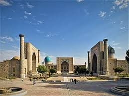
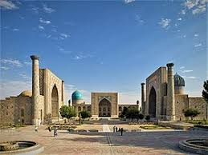
Sirdaryo viloyati — Oʻzbekiston Respublikasi tarkibidagi viloyat. 1963-yil 16-fevralda tashkil etilgan. Shimolidan Qozogʻiston Respublikasi, sharqdan Toshkent viloyati, janubidan Tojikiston Respublikasi va gʻarbdan Jizzax viloyati bilan chegaradosh. Maydoni 4.28 ming km. Aholisi 900 mingga yaqin kishi (2022). Tarkibida 8 tuman (Boyovut, Guliston, Mirzaobod, Oqoltin, Sayxunobod, Sirdaryo, Xovos, Sardoba), 5 shahar (Guliston, Baxt, Sirdaryo, Shirin, Yangiyer), 6 shaharcha (Boyovut, Dehqonobod, Doʻstlik, Paxtaobod, Sayxun, Xovos) va 75 qishloq fuqarolari yigʻini bor (2004). Markazi — Guliston shahri. Tabiati Relyefi, asosan, toʻlqinsimon tekislik boʻlib, janubidan shim.gʻarbga pasayib boradi. Mirzachoʻl dashtining bir qismi viloyat hududiga kiradi. Bal. shimubida 230 m, markaziy qismida 400-450 m, jan. va jan.gʻarbda 600-650 m. Sharqida keng Sirdaryo vodiysi joylashgan. Mezozoy va kaynozoy davrida, asosan, choʻkindi jinslarning qalin qatlami bilan qoplangan. Shoʻroʻzak, Mirzarabot, Sardoba kabi botiqlar mavjud. Tekislik qismi daryolar oqizib keltirgan yotqiziklardan hosil boʻlgan, baʼzi joylarini koʻl, botqoq va shoʻrxok yerlar egallagan. Sirdaryo viloyatida yangi kanallar, zovurlar qazilib, choʻl oʻzlashtirildi va ekin maydonlarga aylantirildi. Tekislik qismida irrigatsiya inshootlari qurilib, paxtazor, bogʻ va tokzorlar barpo qilindi. Adirlar lalmikor yerlar va yaylovlardan iborat. Ob-havosi keskin oʻzgaruvchan va quruq. Yillik oʻrtacha temperaturasi 14°. Yanvarning oʻrtacha temperaturasi shimolida —6°, janubida —2°. Qishda havo tez soviydi va temperatura —30° gacha (Gulistonda —35°) pasayadi. Baʼzan, qish oʻrtalarida havo birdaniga isib, keyin sovib ketadi. Kech koʻklamda va erta kuzda ham kora sovuq tushib oʻsimlikning oʻsish davrini qisqartiradi. Yozi quruq va issiq. Iyulning oʻrtacha temperaturasi 27—29°. Yozda temperatura 32—45° gacha koʻtariladi. Koʻpincha issiq shamol (garmsel) tuproqni quritadi va oʻsimliklar rivojlanishiga yomon taʼsir qiladi. Vegetatsiya davri 218 kun. Yillik yogin 180-220 mm, asosan, qishda yogʻadi. Yozda kuchli bugʻlanish sababli yer osti suvlari yuza maydonlarning (Sharof Rashidov, Oqoltin, Guliston tumanlari) tuprogʻini shoʻr bosadi. Noyabrdan martgacha teztez esib turadigan „Bekobod shamoli“ tezligi 20-25 m/sek. (Boyovut tumanida 40 m/sek.)ga yetadi. Bahorda esadigan bu xildagi shamol unib chikayotgan gʻoʻzalarni baʼzan nobud qiladi. Keyingi yillarda ixota daraxtzorlari barpo qilindi. Tuproqlari, asosan, och tusli kuchsiz joylashgan boʻz tuproq boʻlib, kam va oʻrtacha shoʻrlangan, mexanik tartibiga koʻra, qumoq va soz tuproqlardir. Tekisliklarda shoʻrxok va shoʻrxoksimon tuproq uchraydi. Yer osti suvining chuq. 5-6 m. Shoʻroʻzak massivida, hali oʻzlashtirilmagan pastqam joylarda shoʻrxoklar keng tarqalgan. Sugʻoriladigan yerlarning 32% shoʻrlangan, 25% kuchsiz shoʻrlangan, 16% shoʻrxoklardan iborat. Oʻsimliklardan lolaqizgʻaldoq, boychechak, chuchmoma, qoqi yalpiz, ismaloq, yantoq, shoʻra, shuvoq, qoʻngʻirbosh, qoʻziquloq, tuyatovon, quyonsuyak. juzgʻun, qovul, oqquray, qiltiq, karrak, rang, iloq, betaga, qiyoq, qamish, yulgʻun, oqbosh, qushqoʻnmas, naʼmatak, mingboshi, chitir, gʻumay, pechak, saksovul, har xil butalar, jiyda, doʻlana, tol, terak, qayragʻoch, oq akatsiya, zarang, shumtol va boshqa oʻsadi. Yovvoyi hayvonlardan: jayra, tulki, boʻri, chiyaboʻri, qobon, jayran, nutriya, ondatra, koʻrsichqon, suvkalamush, tipratikan, yumronqoziq, kaltakesak, ilon, toshbaqa, falanga, chayon, qoraqurt; qushlardan xoʻjasavdogar, moyqut, bulduruq va boshqa bor.

Surxondaryo viloyati — Oʻzbekiston Respublikasi tarkibidagi viloyat. 1941-yil 6-martda tashkil etilgan (1925-yil 29-iyundan Surxondaryo okrugi boʻlgan). 1960-yil 25-yanvarda Qashqadaryo viloyati bilan qoʻshilgan. 1964-yil fevralda qaytadan tashkil qilindi. Respublikaning janubi-sharqida, Surxon-Sherobod vodiysida joylashgan. Viloyat nomi vohadan oqib oʻtuvchi “Surxon” (fors-tojik: “qizil”) daryosi nomidan kelib chiqqan. Janubidan Amudaryo boʻylab Afgʻoniston, shimoliy, shimoli-sharq va sharqdan Tojikiston, janubi-gʻarbdan Turkmaniston, shimoli-gʻarbdan Qashqadaryo viloyati bilan chegaradosh. Maydoni 20,1 ming km². Aholisi 2821,9 ming kishi (2023-yil 1-aprel holatiga koʻra). Tarkibida 14 ta tuman (Angor, Bandixon, Boysun, Denov, Jarqoʻrgʻon, Muzrabot, Oltinsoy, Sariosiyo, Termiz, Uzun, Sherobod, Shoʻrchi, Qiziriq, Qumqoʻrgʻon), 8 ta shahar (Boysun, Denov, Jarqoʻrgʻon, Termiz, Shargʻun, Sherobod, Shoʻrchi, Qumqoʻrgʻon), 114 ta shaharcha, 865 ta qishloq aholi punktlari mavjud (2020). Markazi — Termiz shahri. Tabiati Surxondaryo viloyati relyefi togʻ va tekisliklardan iborat, shimoldan janubga qiyalanib va kengayib boradi. Togʻlardan oqib tushadigan koʻpdan-koʻp daryo va soylar dara hosil qilgan. Surxondaryo va Sheroboddaryo oqib oʻtadigan tekislik shimoliy, gʻarb va sharqdan baland Hisor tizmasi (eng baland joyi 4643 m) va uning tarmoqlari (Boysuntogʻ, Koʻhitang togʻ, Bobotogʻ) bilan oʻralgan. Togʻlar, asosan, yuqori paleozoy va mezozoy davrlari jinslaridan, tekislik qismi esa toʻrtlamchi davr yotqiziqlardan tarkib topgan. Bu yerda neotektonika jarayonlari davom etmoqda: tevarak atrofdagi togʻlar koʻtarilib, botiq choʻkib bormoqda. Togʻlar bilan tekislik orasida adir va togʻoldi zonasi joylashgan. Togʻlar shimoliy sovuq havo oqimlarini toʻsib turishi natijasida subtropik oʻsimliklar oʻstirish uchun qulay iqlim sharoiti vujudga kelgan. Togʻ zonasi va adirlarda, asosan, gʻalla yetishtiriladi, chorva uchun yozgi yaylov. Mutlaq balandlik 300-500 m boʻlgan Surxon-Sherobod tekisligida paxta ekiladi, bogʻ-tokzorlar barpo qilingan. Janubiy qismi keng qumliklar bilan qoplangan. Foydali qazilmalardan neft va gaz (Xovdogʻ, Kakaydi, Lalmikor, Amudaryo boʻyi tekisliklari), toshkoʻmir (Shargʻun, Hisor, Boysun, Koʻhitang togʻlarining etaklari), polimetall (Sangardak), osh tuzi (Xoʻjaikon) konlari bor. Gips, granit, argillit kabi qurilish materiallari, mineral suvli buloq koʻp. Tekislik qismining iqlimi quruq subtropik. Yozi jazirama issiq va uzoq, qishi iliq va qisqa. Yillik oʻrtacha temperatura 16°—18°. Iyulning oʻrtacha temperaturasi 28°.—32°, yanvarniki 2,8°—3,6°. Oʻzbekistonda eng issiq temperatura ham shu viloyat hududida kuzatilgan (1914-yil 21-iyunda Termizda 49,5° issiq boʻlgan). Baʼzi yillari qish ancha sovuq (-20° va hatto undan ham past). Yil davomida bulutsiz kunlarning koʻp boʻlishi va quyosh nurining tik tushishi effektiv tralar yigʻindisi yuqori boʻlishiga olib keladi. 10° dan yuqori trali kunlar tekislik qismida 290— 320 kun davom etadi. Bu esa viloyatda eng issiqsevar ekinlar (shakarqamish, ingichka tolali paxta) va mevalar yetishtirishga imkon beradi. Viloyat togʻlar orasidagi berk botikda joylashganidan bu yerda yogʻin kam. Viloyatning janubiy tekisliklarida yiliga 130- 140 mm, Hisor togʻlari yon bagʻirlarida 445-625 mm yogʻin yogʻadi. Yogʻinning asosiy qismi qish va bahorda tushadi. Gʻarbiy, janubi-gʻarbiy va shimoli-sharqiy shamollar koʻp esadi. Viloyatning janubi-sharqiy qismida esadigan Afgʻon shamoli iqlimga salbiy taʼsir etadi. Viloyatning asosiy suv arteriyalari — Surxondaryo va Sheroboddaryo hamda ularning Qoratogʻdaryo, Toʻpolondaryo, Sangardakdaryo, Xoʻjaipok kabi irmoqlari. Togʻ qor va muzliklaridan, yogʻindan toʻyinadigan bu daryolar viloyat hududining shimoliy qismi, togʻ va togʻoldi zonalarinigina suv bilan taʼminlay oladi, janubidagi keng tekisliklarda doimiy suv tanqisligi kuzatiladi. Yer osti (artezian) suvlaridan tobora keng foydalanilmoqda. 1957—1958-yillarda Uchqizil, 1959—1962-yillarda Janubiy Surxon va Degrez suv omborlari, Jarqoʻrgʻon gidrotuguni qurildi. Hazorbogʻ, Daytoʻlak, Qumqoʻrgʻon, Zang kanallari, Sherobod, Amu-Zang mashina sugʻorish kanallari barpo etildi. Tuprogʻi tekisliklarda taqirsimon va shoʻrxok och boʻz tuproqlar, togʻ yonbagʻrida turli xil boʻz tuproqdir. Oʻsimliklar dunyosi ham tabiiy sharoiti bilan bogʻliq. Janubidagi ekin ekilmaydigan qumloq joylarda qandim, oq saksovul, cherkez, taroqbosh, yaltirbosh, yantoq, butasimonlar; daryo boʻylarida yulgʻun, jiyda, turangʻil, terak, savagʻich, qiyoq, qamish; adir va togʻlarning pastki yonbagʻirlarida bir yillik efemerlar (lolaqizgʻaldoq, noʻxatak); 1200-2500 m balandliklarida efemerlar bilan birga archa, pista, qayin, tol, yongʻoq, olma, zarang oʻrmonlari uchraydi. Bobotogʻ tizmasi yonbagʻirlarida respublikaning eng yirik tabiiy pistazorlari joylashgan. Baland togʻ zonasi subalp va alp oʻtloqlari bilan band. Hayvonot dunyosi ancha boy: boʻri, tulki, chiyaboʻri, ayiq, jayron, qobon, yovvoyi echki, arhar, toʻqaylarda bugʻu, toʻqay mushugi, kalamush, qoʻshoyoq, yumronqoziq, koʻrsichqon, gekkon kaltakesagi, koʻzoynakli ilon (kobra), oʻqilon, jayra, qushlardan ular (togʻ kurkasi), qirgʻovul, mayna, qaldirgʻoch, gʻoz, oʻrdak, soʻfitoʻrgʻay, chil, kaklik bor. Daryo va suv omborlarida har xil baliq koʻp.
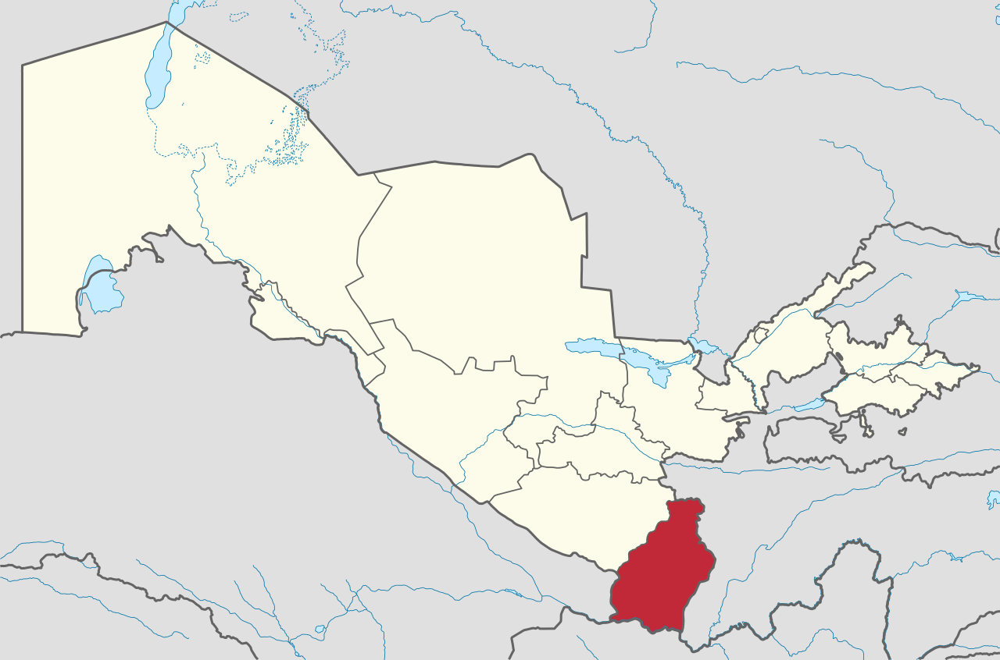 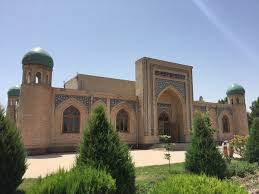 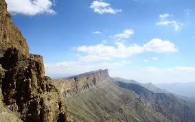Toshkent — Oʻzbekistonning poytaxti va eng yirik shahri boʻlib, aholisi boʻyicha Markaziy Osiyodagi eng yirik qadimiy shaharlardan biri hisoblanadi. Oʻzbekistonning shimoli-sharqiy qismida, Qozogʻiston bilan chegaraga yaqin qismda joylashgan boʻlib, maydoni 334,8 km2 ni tashkil etadi. 2023-yilning 1-iyulidagi maʼlumotlarga koʻra, Toshkent aholisi 2 995 000 nafar kishini (Oʻzbekiston aholisining qariyb 8 foizi) tashkil etadi[2]. 2018-yilgi maʼlumotlarga koʻra, Toshkent shahrining YIMi $2,74 milliardni tashkil etadi va bu koʻrsatkich Oʻzbekistondagi eng katta YIMga ega shahar boʻlib kelmoqda[5][6]. Milodiy VIII asr oʻrtalarida islomiy taʼsir boshlangunga qadar, Toshkentga sugʻd va turkiy madaniyat taʼsir koʻrsatgan. 1219-yilda Chingizxon Toshkentni vayron qilganidan soʻng, shahar qayta tiklandi va Buyuk Ipak yoʻlidan foyda koʻrdi. XVI-XVII asrlarda Toshkent Shayboniylar va Ashtarxoniylar davlati tarkibida boʻlgan. XVIII–XIX asrlardan boshlab ushbu shahar Qoʻqon xonligi tomonidan zabt etilgunga qadar, mustaqil shahar-davlatga aylangan edi. 1865-yilda Toshkent Rossiya imperiyasi tarkibiga kirdi hamda Turkiston general-gubernatorligi markazi boʻldi. Sovet davrida bu shahar butun Sovet Ittifoqining majburiy deportatsiyasi tufayli katta oʻsish va demografik oʻzgarishlarga guvoh boʻlgan. 1966-yilda boʻlgan Toshkent zilzilasi tufayli Toshkentning katta qismi vayron boʻlgan edi, biroq u namunali Sovet shahri oʻlaroq qayta qurilgan. Oʻsha paytda Toshkent Sovet Ittifoqining Moskva, Leningrad va Kiyev shaharlaridan keyin turadigan toʻrtinchi yirik shahar boʻlgan[7]. Hozirgi kunda, mustaqil Oʻzbekiston poytaxti sifatida, Toshkentda koʻp millatli aholi saqlanib qolgan, ular orasida etnik oʻzbeklar va qozoqlar koʻpchilikni tashkil qiladi. 2009-yilda Toshkentning 2 200 yilligi nishonlandi. Bu munosabat bilan shahar infra va transport tizimi yangilandi[8][9]. Toshkent yirik shahar Etimologiyasi Toshkent 2200-yildan ortiq tarixga ega[10]. Bu davr ichida u mudofaa devori bilan oʻralgan qalʼadan jahondagi yirik shaharlardan biri, Oʻzbekiston Respublikasining poytaxtigacha boʻlgan yoʻlni bosib oʻtdi. Asrlar davomida shahar oʻzining tinch hayotidagi muhim voqealarni va suronli jangu jadallarni, yuksalish va inqiroz davrlarini boshidan kechirdi. Necha bor shahar vayron boʻlib, qayta qad koʻtardi. Toshkent oʻrnidan necha bor siljib, nomi xam bir necha marta oʻzgardi. Xoja Ahror Valiy, Shayx Umar Bogʻistoniy, Abu Bakr Shoshiy, Abu Sulaymon Banokatiy, Hofiz Koʻhakiy kabi buyuk allomalar shu hududda yashab, ijod etganlar. Shahar sifatida Toshkent haqidagi birinchi maʼlumotlar eramizdan avvalgi II asrdagi qadimgi-sharqiy manbalarda uchraydi; Xitoy manbalarida Yuni deb atalgan; Fors shohi Shоpur I eramizdan avvalgi 262-yildagi „Zardusht Kaʼbasi“ qaydnomalarida Toshkent vohasi Choch deb nomlangan. Choch — oltin eksporti, qimmatbaho toshlar, shirinliklar va aslzot otlarni boshqa shahar va mamlakatlarga olib oʻtishdagi yoʻlning chorrahasida joylashgan. „Tosh shahar“ maʼnosini anglatuvchi bugungi Toshkent — zamonaviy respublikaning poytaxti, oʻtmish maʼlumotlarini saqlovchi, Oʻzbekiston tarixi haqida koʻp maʼlumotlarni xotirlovchi, 2 milliondan ortiq aholisi boʻlgan bu shahar Markaziy Osiyoning eng katta industrial markazlaridan biridir.[manba kerak] Toshkentning uzoq oʻtmishi va u qad koʻtargan qadimgi Choch yoki Shosh viloyati haqidagi maʼlumotlar yozma manbalarda xilma-xil hamda uzuq-yuluq tarzda aks etgan. Zardushtiylarning qadimgi muqaddas kitobi Avesmona Sirdaryo havzasidagi mamlakat „Turon“, aholisi esa „tur“lar deb yuritilgan. Bu oʻlkada tur qavmlari urugʻ va qabila oqsoqollarining diniy va siyosiy qarorgohi — Qangʻxa (Qangʻa) shahri borligi tilga olinadi. Toshkent haqidagi dastlabki aniqroq maʼlumotlar miloddan avvalgi 2-asr — milodiy 5-asrlarga mansub Xitoy manbalarida uchraydi. Ularda Toshkent viloyati qadimda Loyuyeni, Yuni, soʻngra Chjeshe, Chjechji, Chjesi va Shi deb nomlangan. Bu atamalar (avvalgi ikkitasidan tashqari) „Choch“ soʻzining xitoycha talaffuz etilishi natijasida hosil boʻlib, hatto oxirgi „Shi“ toponimi xitoychada „tosh“ maʼnosini anglatgan. Miloddan avvalgi 3-asrda qadimgi Choch viloyatida tashkil topib, milodning 3-asrlarigacha hukm surgan „Qangʻ“ („Qangʻa“ yoki „Qangʻxa“) davlati Xitoy yozma manbalarida „Kangkiya“ („Kanizyuy“) nomlari bilan tilga olinadi. Qadimgi toxarlar tilida „qangʻ“ soʻzi ham „tosh“ maʼnosini anglatgan. Bu davlatning poytaxti — Bityan shahri boʻlib, u Iosha-Xasart daryosi (Sirdaryo) boʻyida joylashgan. Bityan shahri Davan (Fargʻona vodiysi)dan 1510 li (528 km) masofada boʻlgan. Bityan shahrining bizgacha saqlanib qolgan xarobalari mahalliy aholi oʻrtasida „Qanqatepa“ nomi bilan mashhur. U Toshkentdan 70 km janubda — Sirdaryoga yaqin yerda, Ohangaron daryosining qurib qolgan qadimgi oʻzani boʻyida joylashgan. Arxeologik maʼlumotlardan maʼlum boʻlishicha, Qanqatepa miloddan avvalgi 3-asrdayoq atrofi mudofaa devori bilan oʻralgan hamda arkli katta shahar boʻlib, maydoni 160 gektarga teng boʻlgan. Qadimgi Qangʻ davlatining fuqarolari ham „qangʻar“, „qanzar“, keyinchalik „qanhi“, „qangʻli“ yoki „qaʼni“ deb nomlangan. Ular (qanqalar) hindlarning qadimgi kitobi „Mahabharata“da saklar va toxarlar nomlari qatorida tilga olingan. Yozma manbalarda keltirilishicha, Toshkentning qadimgi nomi „Choch“ boʻlgan. Toshkent arablar tasarrufiga oʻtgach, arab alifbosida „ch“ harfining yoʻqligi bois arabiy asarlarda „Shosh“ deb yuritilgan. Ilk oʻrta asrlarda u „Choch“, „Shosh“, „Shoshkent“, „Madinat ash Shosh“, „Binkat“ va „Tarkan“ deb nomlangan. Toshkent haqidagi dastlabki maʼlumotlar mahalliy olimlar (Xorazmiy) va tarixchi geograflardan Tabariy, Istahriy asarlarida uchraydi. Istahriyning „Kitob al masolik val mamolik“ („Yoʻllar va mamlakatlar toʻgʻrisidagi kitob“)ida Shoshning bosh shahri Binkat deb koʻrsatiladi. 10-asrda yozilgan (muallifi nomaʼlum) „Hudud ul Olam“ („Olamning chegaralari“) kitobida „Choch bu katta viloyat, xalqi jangovar va sahiydir. U yerda kamon va oʻqyoy yasaladi. Binkat Chochning poytaxti hisoblanadi. Bu katta shahar, ayni vaqtda podshoning qarorgohidir“, deb taʼriflanadi. Firdavsiyning „Shohnoma“ asarida Choch oʻzining kamoni Shoshiy (oʻqyoylari) bilan mashhurligi haqida misralar bor. Shahar „Toshkent“ nomi bilan dastavval 11-asrning mashhur allomalari — Abu Rayhon Beruniy va Mahmud Qoshgʻariyning asarlarida tilga olinadi. Beruniy „Hindiston“ asarida Toshkent nomining kelib chiqishi toʻgʻrisida soʻz yuritib, „Tosh“ soʻzi asli turkcha boʻlib, Shosh koʻrinishini olgan. „Toshkand — toshli qishloq demakdir“, deb izohlaydi. Mahmud Qoshgʻariyning maʼlumoti boʻyicha, Toshkent 11-12-asrlarda „Tarkan“ deb ham yuritilgan. Zahiriddin Muhammad Bobur „Boburnoma“da Toshkent nomi ustida toʻxtalib, asarlarda Toshkent nomini Shosh, baʼzan Choch yozadilar" deb qayd etadi. Biroq 16-asr oxiri va 17-asr boshlarida Toshkent toponimi shuhrat topib, uning qadimgi Choch, Shosh va Binkat nomlari asta-sekin muomaladan tushib qoldi. 17-asrda yashagan tarixchi olim Mahmud ibn Vali shunday yozadi: „Shosh — Sayxun (Sirdaryo)ning u tomoniga joylashgan shahar va Turkiston (viloyat)ga qaraydi… Uni Choch ataydilar. Biroq hozirgi vaqtda u Toshkent nomi bilan mashhurdir“. Toshkent vohasida shahar madaniyatining shaqllanib, shaharning qad koʻtarishi shu oʻlkada yashagan qadimgi chorvador va dehqonlarning ijtimoiy-iqtisodiy va madaniy hayotidagi ulkan tarixiy jarayon boʻlib, bu jarayon shubhasiz oʻlkaning oʻzlashtirilib, obod etilishi, ayniqsa, unda chorvachilik va dehqonchilik xoʻjaliklarining tashkil topishi hamda hunarmandchilik, ichki va tashqi savdoning rivojlanish tarixi bilan uzviy bogʻliqdir. Bu jarayonning tarixiy manzarasi nihoyatda keng boʻlib, u yozma manbalarga nisbatan koʻproq arxeologik tadqiqotlar vositasi bilan tiklanmoqda. Shuning uchun ham Toshkent hududida olib borilgan arxeologik tadqiqotlarning natijalari qadimgi va oʻrta asrlarga oid manbalardagi maʼlumotlarni toʻldirib, ularga aniqlik kiritmoqda. 1867-yilda Toshkent Turkiston general-gubernatorligining markaziga aylandi. 1930-yildan 1991-yilgacha Toshkent Oʻzbekiston SSR poytaxti boʻlgan.
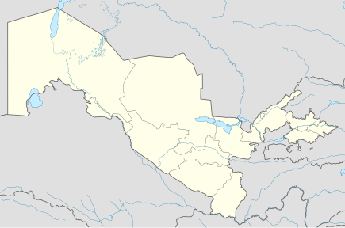Toshkent viloyati — Oʻzbekiston Respublikasi tarkibidagi viloyat. Respublikaning shimoli-sharqida. 1938-yil 15-yanvarda tashkil kilingan. Shimoliy va shimoli-gʻarbdan Qozogʻiston Respublikasi, shimoli-sharqdan Qirgʻiziston Respublikasi, sharqdan Namangan viloyati, janubidan Tojikiston Respublikasi, janubi-gʻarbdan Sirdaryo viloyati bilan chegaradosh. Maydoni (Toshkent shahri maydonisiz) 15,3 ming km². Aholisi (Toshkent shahri aholisisiz) 2.931 million kishidan ziyod (2022). Viloyat tarkibida 15 ta tuman (Bekobod, Boʻka, Boʻstonliq, Zangiota, Oqqoʻrgʻon, Ohangaron, Parkent, Piskent, Chinoz, Yuqori Chirchiq, Yangiyoʻl, Oʻrta Chirchiq, Qibray, Quyi Chirchiq), 17 shahar (Angren, Bekobod, Boʻka, Doʻstobod, Keles, Olmaliq, Oqqoʻrgʻon, Ohangaron, Parkent, Piskent, Toshkent, Toʻytepa, Chinoz, Chirchiq, Yangiyoʻl, Yangiobod, Gʻazalkent), 18 shaharcha (Alimkent, Boʻzsuv, Gulbahor, Zafar, Iskandar, Krasnogorsk, Nurobod, Olmazor, Salor, Tuyaboʻgʻiz, Chigʻiriq, Chorvoq, Eshonguzar, Yangibozor, Yangi chinoz, Yangihayot, Oʻrtaovul, Qibray), 146 qishloq fuqarolari yigʻini bor. Markazi — Nurafshon shahri. Tabiati Viloyatning shimoliy va shimoli-sharqiy qismlari Gʻarbiy Tyanshan togʻlari va uning tarmoqlari (Qurama, Piskom va Ugom togʻlari) bilan band. Eng baland joyi Piskom tizmasidagi Manas togʻi (4484 m). Chatqol va Qurama togʻlari orasida Ohangaron daryosi kesib oʻtgan, Ohangaron platosi joylashgan. Viloyat hududining katta qismi Sirdaryo tomon qiyalanib boradigan togʻ oldi tekisligi (Chirchiq-Ohangaron vodiysi)dan iborat. Ohangaron daryo vodiysi, Qurama togʻi, Angren-Olmaliq atrofida foydali qazilmalardan mis, polimetall rudalari, oltin, kumush, qoʻrgʻoshin, alyuminiy xom ashyosi, qoʻngʻir kumir, molibden konlari, plavik shpati va dala shpati, turli xil qurilish materiallari bor. Termal va mineral suv zaxiralari kup. Viloyat kuchli seysmik zonada joylashgan. Ayniqsa, Chirchiq va Ohangaron havzalarida aniq seziladigan zilzilalar buning ifodasidir. Juda kuchli zilzila 1868-yilda Toshkentda boʻlib oʻtdi va 1966-yilda takrorlandi. Turli intensivlikdagi yer osti silkinishlar vaqtvaqti bilan hozirgi kunda ham davom etmoqda.[2]
 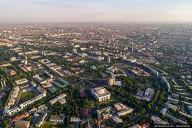
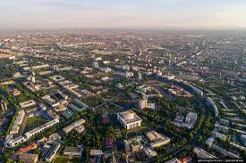
Xorazm viloyati — Oʻzbekiston Respublikasi tarkibidagi viloyat. 1925-yil fevraldan 1938-yil yanvargacha Xorazm okrugi, 1938-yil 15-yanvarda viloyat maqomiga oʻtkazilgan. Viloyat shimoldan Qoraqalpogʻiston respublikasi, janubdan Turkmaniston respublikasining Toshhovuz viloyati, sharqdan Buxoro viloyati bilan chegaradosh. Shaharlari — Urganch , Xiva va Pitnak. Umumiy maydoni — 6,05 ming kvadrat kilometr. Maʼmuriy markazi — Urganch shahri. Etimologiyasi Xorazm soʻzi birinchi marta zardushtiylarning muqaddas kitobi „Avesto“da tilga olingan. Qadimgi xorazm tilidan tarjima qilingan Xorazm „pastlikdagi yer“, „oziq-ovqatli yer“ degan maʼnoni bildirgan degan fikrlar ham bor. Tarixi Miloddan avvalgi 8-asrda xorazmliklar tomonidan asos solingan Markaziy Osiyodagi eng qadimiy davlatlardan biri tashkil topdi. Bu yerda massagetlar, saklar, apasaklar, oslar, daxlar va boshqalar qabilalari ham yashagan. 12-asrda Oʻrta Osiyoda qudratli Xorazmshohlar davlati tashkil topdi. U oʻzining eng gullab-yashnagan choʻqqisiga 13-asr boshlarida Alauddin Muhammad II davrida erishgan. Ammo imperiyaning gullagan davri uzoq davom etmadi va u moʻgʻullar bosqinidan natijasida Xorazmshohlar davlati quladi. 1920-yil fevral oyida Xiva xonligining vorisi sifatida Xorazm Xalq Sovet Respublikasi tashkil topdi[1]. Hukmdor rasman taxtdan voz kechgach, 1920-yil 26-aprelda Birinchi Xorazm Qurultoyi (yigʻilishi) eʼlon qilindi[2]. 1923-yil 30-oktabrda XXSR Xorazm Sotsialistik Sovet Respublikasiga aylantirildi. Oʻrta Osiyoda milliy-hududiy chegaralanish munosabati bilan Xorazm SSR tugatilishini eʼlon qildi. Xorazm SSRning oʻzbeklar yashaydigan 23 ta tumani yangidan tashkil qilingan Oʻzbekiston SSR tarkibiga Xorazm viloyati qilib kiritildi[3]. U 1924-yilning kuzigacha, uning hududi Oʻzbekiston SSR (Xorazm viloyati tarkibida), Turkmaniston SSR va Qoraqalpogʻiston Muxtoriyati oʻrtasida boʻlingangacha mavjud edi. 1925—1930-yillarda va 1932—1938-yillarda Xorazm tumani tashkil etilgan. 1938-yil 15-yanvarda alohida viloyat sifatida tashkil topdi[4]. Xorazm algebra va algoritm asoschisi Muhammad bin Muso Al Xorazmiy va shar shaklidagi yer xaritasini yaratgan Abu Rayxon Beruniy hamda boshqa olim va arboblarning vatani hisoblanadi. 2003-yilda Xorazm viloyati Jaloliddin Manguberdi ordeni bilan taqdirlangan[5].
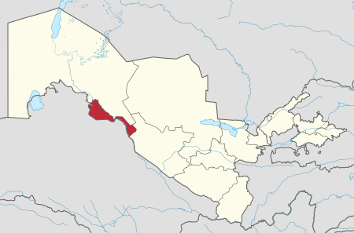 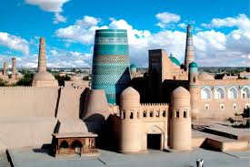 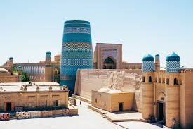